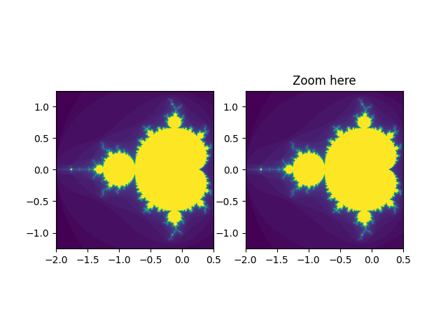

Note
Click here to download the full example code
Viewlims¶
Creates two identical panels. Zooming in on the right panel will show a rectangle in the first panel, denoting the zoomed region.
import numpy as np
import matplotlib.pyplot as plt
from matplotlib.patches import Rectangle
# We just subclass Rectangle so that it can be called with an Axes
# instance, causing the rectangle to update its shape to match the
# bounds of the Axes
class UpdatingRect(Rectangle):
def __call__(self, ax):
self.set_bounds(*ax.viewLim.bounds)
ax.figure.canvas.draw_idle()
# A class that will regenerate a fractal set as we zoom in, so that you
# can actually see the increasing detail. A box in the left panel will show
# the area to which we are zoomed.
class MandelbrotDisplay:
def __init__(self, h=500, w=500, niter=50, radius=2., power=2):
self.height = h
self.width = w
self.niter = niter
self.radius = radius
self.power = power
def compute_image(self, xstart, xend, ystart, yend):
self.x = np.linspace(xstart, xend, self.width)
self.y = np.linspace(ystart, yend, self.height).reshape(-1, 1)
c = self.x + 1.0j * self.y
threshold_time = np.zeros((self.height, self.width))
z = np.zeros(threshold_time.shape, dtype=complex)
mask = np.ones(threshold_time.shape, dtype=bool)
for i in range(self.niter):
z[mask] = z[mask]**self.power + c[mask]
mask = (np.abs(z) < self.radius)
threshold_time += mask
return threshold_time
def ax_update(self, ax):
ax.set_autoscale_on(False) # Otherwise, infinite loop
# Get the number of points from the number of pixels in the window
self.width, self.height = \
np.round(ax.patch.get_window_extent().size).astype(int)
# Get the range for the new area
vl = ax.viewLim
extent = vl.x0, vl.x1, vl.y0, vl.y1
# Update the image object with our new data and extent
im = ax.images[-1]
im.set_data(self.compute_image(*extent))
im.set_extent(extent)
ax.figure.canvas.draw_idle()
md = MandelbrotDisplay()
Z = md.compute_image(-2., 0.5, -1.25, 1.25)
fig1, (ax1, ax2) = plt.subplots(1, 2)
ax1.imshow(Z, origin='lower',
extent=(md.x.min(), md.x.max(), md.y.min(), md.y.max()))
ax2.imshow(Z, origin='lower',
extent=(md.x.min(), md.x.max(), md.y.min(), md.y.max()))
rect = UpdatingRect(
[0, 0], 0, 0, facecolor='none', edgecolor='black', linewidth=1.0)
rect.set_bounds(*ax2.viewLim.bounds)
ax1.add_patch(rect)
# Connect for changing the view limits
ax2.callbacks.connect('xlim_changed', rect)
ax2.callbacks.connect('ylim_changed', rect)
ax2.callbacks.connect('xlim_changed', md.ax_update)
ax2.callbacks.connect('ylim_changed', md.ax_update)
ax2.set_title("Zoom here")
plt.show()
Keywords: matplotlib code example, codex, python plot, pyplot Gallery generated by Sphinx-Gallery